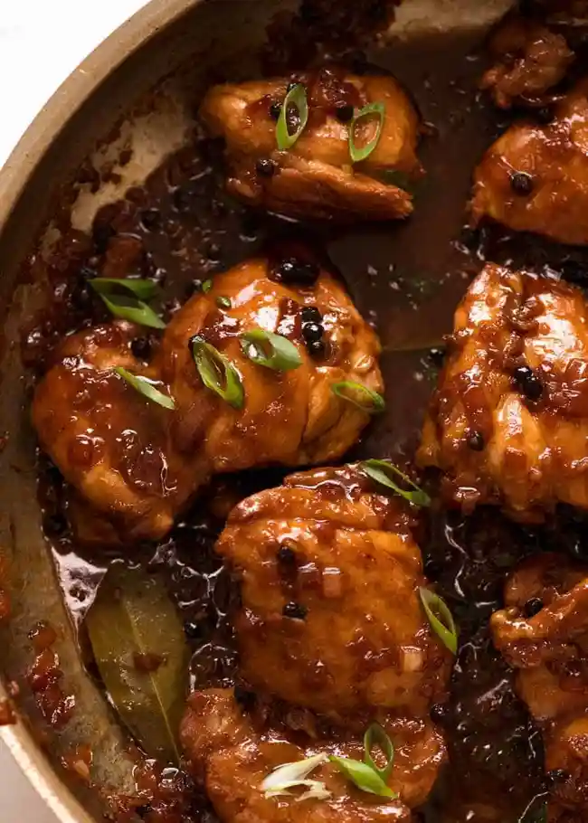

Chicken Adobo

Much Adobo... Chicken?
There's very little about this dish to do with Shakespeare, despite the misleading title.
Truthfully, it has nothing at all in common with the Elizabethan playwright. I simply couldn't resist such a fowl joke, and I'm no chicken when it comes to my puns.
Get it? Much ado about no- anyway.
Chicken Adobo is the national dish of the Philippines, and can be made with other proteins like pork and beef!
Having said that, with simple ingredients and big bold flavours that work together to create an unforgettable dish with few equals... perhaps this flavour bomb shares more traits with his works than first assumed.
Follow this simple recipe if you want to sample one of the best dishes in the world!
What you need
- boneless skinless chicken thighs - can't be substituted with other cuts, you need the fat to thicken the sauce into a glaze;
- soy sauce - all-purpose or light soy. not dark soy (bottle will be labelled as such if it's dark soy sauce);
- white vinegar - everyday, plain white vinegar.Sub with any clear vinegar, inc. rice win, apple cider, or sherry vinegar;
- onion & garlic - for those essential umami undertones;
- peppercorns - whole, or coarse cracked pepper;
- sugar - brown is best, white is a good 2nd;
- bay leaves - fresh or dried, not the end of the world if missing;
- green onion & sesame seeds - optional garnish. Toast sesame seeds for extra flavour
Ingredients
Chicken and Marinade
- 750g/1.5lb chicken thighs fillets, boneless and skinless (5 - 6 pieces)
- 3 garlic cloves, minced
- 85ml/1/3 cup soy sauce, all-purpose or light (not dark)
- 85ml + 2tbsp white vinegar
- 4 fresh bay leaves (3 dried)
For Cooking
- 2 tbsp oil, separated (vegetable, canola, or peanut)
- 3 garlic cloves, minced
- 1 small brown onion, diced
- 375ml/1 1/2cups water
- 2 tbsp brown sugar
- 1 tbsp whole black peppercorns (sub2 tsp coarse, cracked pepper)
Serving
- 2 green onions/scallions, sliced (garnish)
Instructions
- Combine Chicken and Marinade ingredients in a bowl. Marinate for at least 20 minutes, or up to overnight.
- Heat 1 tbsp oil in a skillet over high heat. Remove chicken from marinade (reserve marinade) and place in the pan. Sear both sides until browned - about 1 minute on each side. Do not cook the chicken all the way through.
- Remove chicken skillet and set aside.
- Heat the remaining oil in skillet. Add garlic and onion, cook 1 1/2 minutes.
- Add the reserved marinade, water, sugar and black pepper. Bring it to a simmer then turn heat down to medium high. Simmer 5 minutes.
- Add chicken smooth side down. Simmer uncovered for 20 to 25 minutes (no need to stir), turning chicken at around 15 minutes, until the sauce reduces down to a thick jam-like syrup.
- If the sauce isn't thick enough, remove chicken onto a plate and let the sauce simmer by itself - it will thicken much quicker - then return chicken to the skillet to coat in the glaze.
- Coat chicken in glaze then serve over rice. Pictured in post as a healthy dinner plate (415 calories) with cauliflower rice and Ginger Smashed Cucumbers.